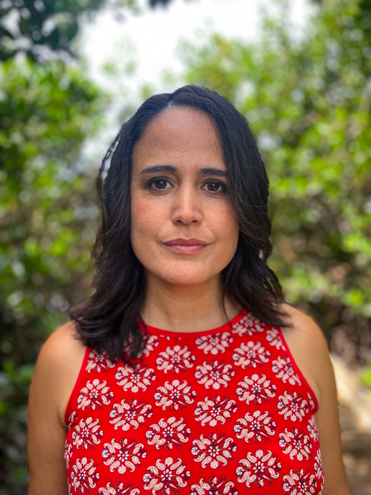

Alicia Upano is the recipient of the 2018 James Jones First Novel Fellowship and the fiction winner of the 2016 Poets & Writers Maureen Egen Writers Exchange Award Hawai'i. Her creative work is published in the Asian American Literary Review, Bamboo Ridge, The Massachusetts Review, The Southern Review and The Best Peace Fiction: A Social Justice Anthology (University of New Mexico Press, 2021), among others.
Her creative work has been supported by the Bread Loaf Writers' Conference, the Jentel Artist Residency, The Community of Writers at Squaw Valley, Southampton Writers Conference, and Voices of Our Nations Arts Foundation.
Born and raised in Hawai'i, she's lived in Asia and on both U.S. continental coasts. She currently resides on O'ahu with her family and is represented by Lisa Grubka at UTA. Her debut novel, EVERYTHING TO THE SEA, will be published by William Morrow/HarperCollins (US) and Bloomsbury (UK) in summer 2026.
Get in touch: contact(at)aliciaupano.com.